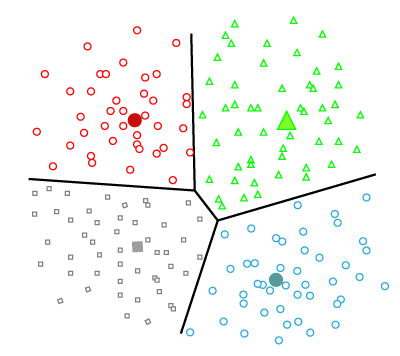
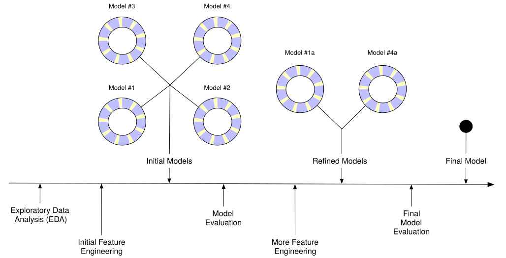

1 - Introducción a Machine Learning in tidymodels
1 Objetivos del capítulo
Este capítulo introduce el flujo de trabajo básico para construir modelos de machine learning con tidymodels. Al finalizar deberías poder:
- Reconocer los tipos de modelos más comunes y sus propósitos.
- Distinguir entre aprendizaje supervisado y no supervisado.
- Explicar las etapas del proceso de análisis de datos y cómo se evalúan los modelos.
- Identificar los paquetes del ecosistema tidyverse que facilitan la preparación y el modelado.
2 Tipos de modelos
2.1 Modelos descriptivos
Se centran en comprender y comunicar qué ocurre en los datos:
- Describen la estructura general de la base.
- Resumen y visualizan patrones relevantes.
- Sirven como punto de partida para generar hipótesis.
2.2 Modelos inferenciales
Buscan responder preguntas sobre parámetros poblacionales:
- Estiman probabilidades y cuantifican la incertidumbre.
- Contrastan hipótesis específicas mediante valores p o intervalos de confianza.
- Requieren supuestos explícitos que permiten extrapolar conclusiones.
2.3 Modelos predictivos
Priorizan la capacidad de anticipar resultados:
- Asignan reglas a eventos futuros, aun si el mecanismo no es completamente conocido.
- Evalúan el desempeño con datos no utilizados durante el entrenamiento.
- Prefieren métricas enfocadas en el error de predicción o la generalización.
3 Modelos comunes de machine learning
Algunos algoritmos ampliamente usados en predicción supervisada incluyen:
k-nearest neighbors (k-NN).- Árboles de decisión y variantes ensembladas como Random Forests.
- Máquinas de vectores de soporte (Support Vector Machines).
- Modelos lineales regularizados (
glmnet) o bayesianos (stan_glm).
Cada algoritmo ofrece un balance distinto entre interpretabilidad, capacidad de ajuste y requisitos computacionales.
4 Tipos de aprendizaje en machine learning
4.1 Aprendizaje supervisado
Se dispone de una variable de resultado (Y) y el objetivo es mapear predictores (X) contra ella.
- Regresión:
Ycontinua. - Clasificación:
Ycategórica.

4.2 Aprendizaje no supervisado
No existe un resultado etiquetado. El foco está en encontrar estructura latente.
- Reducción de dimensión (componentes principales).
- Agrupamiento (clustering) y detección de anomalías.

5 Proceso de análisis de datos
Un proyecto analítico rara vez comienza construyendo el modelo definitivo. Los pasos habituales incluyen:
- Explorar los datos (EDA) para entender la calidad y los patrones principales.
- Ingeniería de variables para crear representaciones que capturen la señal.
- Ajustar y sintonizar modelos con remuestreo o validación cruzada.
- Evaluar el desempeño con métricas alineadas al problema.

Durante cada etapa conviene responder preguntas como:
- ¿Qué tanto preprocesamiento necesita la base antes de modelar?
- ¿Cuál es el plan de evaluación (hold-out, validación cruzada, bootstrapping)?
- ¿Cómo se compartirá el conocimiento generado?
6 Dos ideas importantes
- Error de generalización: se estima usando muestras de validación o remuestreo para aproximar el comportamiento fuera de muestra.
- Balance sesgo-varianza: modelos muy flexibles pueden sobreajustar (bajo sesgo, alta varianza), mientras que modelos rígidos pueden subajustar (alto sesgo, baja varianza).

7 Modelar datos en R
Existen múltiples enfoques para crear modelos:
- Base R: funciones como
lm()oglm()permiten especificar fórmulas de manera directa. - Paquetes especializados:
glmnet,ranger,xgboost,stan, entre otros. - Ecosistema tidymodels: provee una sintaxis coherente para especificar modelos, recetas de preprocesamiento y flujos de trabajo reproducibles.

8 Paquetes esenciales del tidyverse
Cada paquete se enfoca en una parte del pipeline:
ggplot2: visualización declarativa.dplyr: transformación y manipulación de datos.tidyr: normalización y reshaping en formato tidy.readr: ingestión de datos en formatos planos.purrr: programación funcional y operaciones iterativas.tibble: data frames modernos que respetan el principio tidy.stringr: procesamiento de cadenas.forcats: manejo de factores y codificaciones categóricas.

9 Estilo tidyverse
Trabajar con tidyverse implica una convención clara:
- Uso extensivo del operador
|>para encadenar pasos. - Nombres de objetos consistentes y expresivos.
- Preferencia por funciones puras que retornan objetos de la misma clase que reciben.
- Uso explícito de comillas y factores, evitando transformaciones implícitas.
- Promoción de la programación funcional para iterar sin bucles mutables.